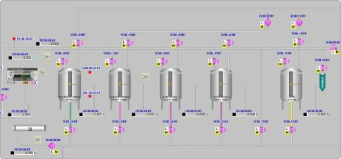
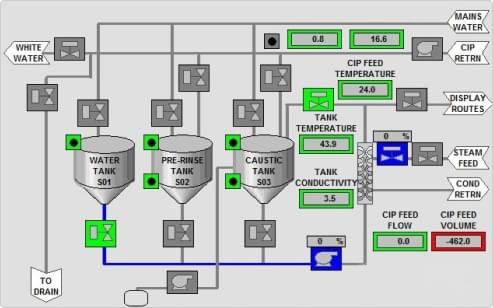

На предприятиях пищевой промышленности периодически возникает необходимость автоматизации производственных процессов для повышения производительности, качества выпускаемой продукции и повышения экономической эффективности. Для контроля физико-химических характеристик сред используют анализаторы.
Предлагаем Вашему вниманию варианты технических решений по подключению анализаторов для контроля границы сред, концентрации промывочных жидкостей на CIPстанциях, сточных вод, контроля функционирования пастеризатора. В схеме подключения помимо анализатора предусматривается использование шкафа управления с сигнальной колонной, дисплеем и возможностью подачи сигнала на запорную арматуру.

STS03 – датчик измерения оптической плотности жидкостей, для непрерывного контроля среды, а также определения границы изменения параметров среды, контроля процессов сепарации, фильтрации, измерения концентрации, а также контроля качества в диапазоне 0…3250 ЕВС
STS01 – датчик непрерывного измерения оптической плотности жидкостей или определения границы изменений параметров среды, для контроля процесса сепарации, а также контроля концентрации в трёх вариантах исполнения по оптической длине
-050-1-А-1 с оптической длиной 5 мм для диапазона 0…500 ЕВС
-010-1-А-1 с оптической длиной 10 мм для диапазона 0…250 ЕВС
-020-1-А-1 с оптической длиной 20 мм для диапазона 0…100 ЕВС
STS015 – анализатор рассеивания инфракрасного излучения в диапазоне 700…6000 ЕВС
SLI03 – датчик измерения электропроводимости в диапазоне 0…999 мСм/см для контроля разделение сред и регулировки концентрации агрессивных сред для CIP мойки, контроля качества продукции, определение остатков продуктапри CIP возврате
SLK-11 - датчик непрерывного измерения электропроводимостив диапазоне 0…15000 мкСм/смдля контроля качества продукта, границы фаз разделения сред для пищевой или фармацевтической промышленности

На предприятиях пищевой промышленности периодически возникает необходимость автоматизации производственных процессов для повышения производительности, качества выпускаемой продукции и повышения экономической эффективности. Для контроля физико-химических характеристик сред используют анализаторы.
Предлагаем Вашему вниманию варианты технических решений по подключению анализаторов для контроля границы сред, концентрации промывочных жидкостей на CIPстанциях, сточных вод, контроля функционирования пастеризатора. В схеме подключения помимо анализатора предусматривается использование шкафа управления с сигнальной колонной, дисплеем и возможностью подачи сигнала на запорную арматуру.
На предприятиях пищевой промышленности периодически возникает необходимость автоматизации производственных процессов для повышения производительности, качества выпускаемой продукции и повышения экономической эффективности. Для контроля физико-химических характеристик сред используют анализаторы.
Предлагаем Вашему вниманию варианты технических решений по подключению анализаторов для контроля границы сред, концентрации промывочных жидкостей на CIPстанциях, сточных вод, контроля функционирования пастеризатора. В схеме подключения помимо анализатора предусматривается использование шкафа управления с сигнальной колонной, дисплеем и возможностью подачи сигнала на запорную арматуру.